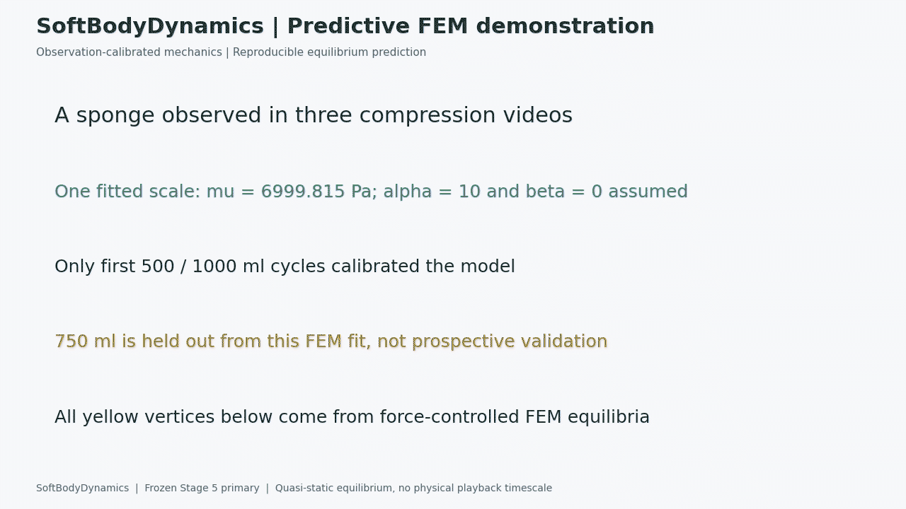
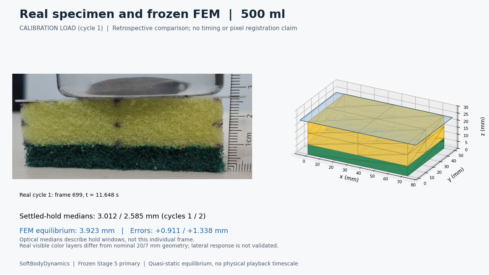
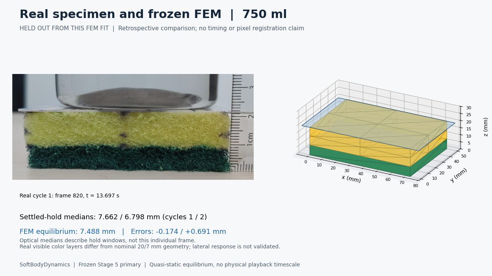
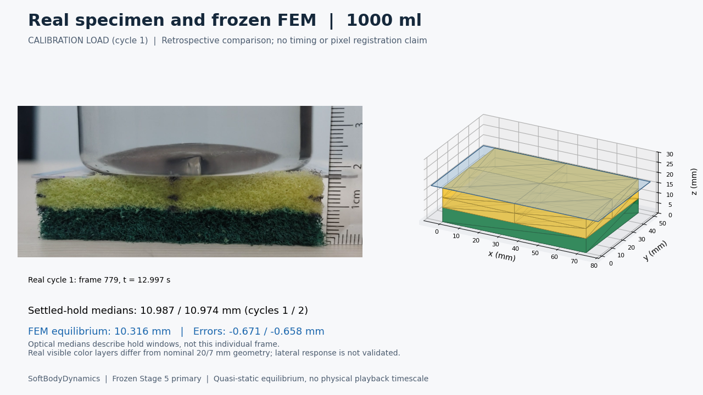
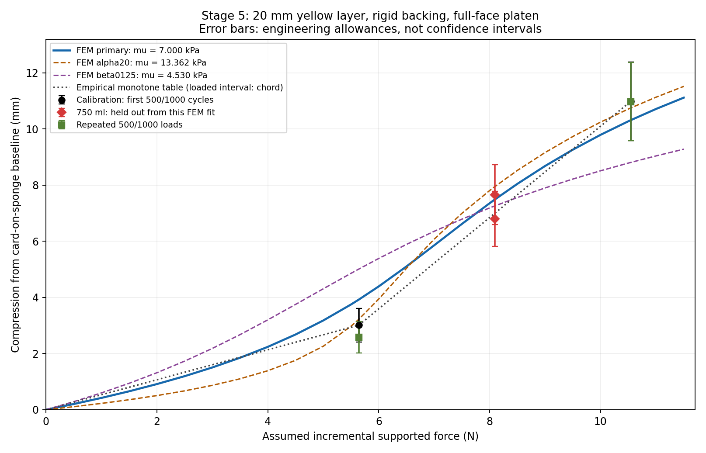

DIRAC ROBOTICS TAKE-HOME | STAGE 6From video observations to
force-driven 3D equilibrium
A frozen one-scale hyperfoam FEM model of the yellow sponge above rigid green backing. No measured marker trajectory drives its vertices.
Scope: quasi-static loading and reversible unloading. Playback cadence is illustrative, not measured recovery time. Existing 750 ml data are held out of this FEM fit, not untouched prospective validation.
Demonstration
Download MP4 (MPEG-4 Part 2) · Open GIF · Run instructions
Play animation (GIF browser fallback)

Real specimen and simulated equilibria
Real photographs show one frame within each first-cycle hold. Measurements are settled-window medians, not measurements of the displayed individual frame. Cameras are not pixel registered.



Quantitative comparison
| Load/cycle | Role | Measured mm | FEM mm | Error mm |
|---|
| 500ml/1 | calibration | 3.012 | 3.923 | +0.911 |
| 500ml/2 | repeat_load | 2.585 | 3.923 | +1.338 |
| 750ml/1 | held_out_from_FEM_fit | 7.662 | 7.488 | -0.174 |
| 750ml/2 | held_out_from_FEM_fit | 6.798 | 7.488 | +0.691 |
| 1000ml/1 | calibration | 10.987 | 10.316 | -0.671 |
| 1000ml/2 | repeat_load | 10.974 | 10.316 | -0.658 |
Primary: mu = 6999.814990181902 Pa, alpha = 10, beta = 0. Calibration RMSE 0.800 mm; 750 ml RMSE 0.504 mm, versus 0.490 mm for empirical interpolation. The primary low-load mismatch exceeds its nominal engineering allowance.

What is established?
Element energies/gradients, force equilibrium, positive Jacobians and coordinate/mesh consistency are numerically verified. Videos inform an effective global equilibrium scale. Spatial stresses, lateral expansion, arbitrary contact and dynamic recovery have not been experimentally validated.
Alpha = 20 remains a sensitivity comparison: it fits the two endpoints better but has larger 750 ml error. The data do not identify a unique constitutive shape. The green backing is assumed rigid; normal constraints are full-face frictionless planes, not a collision solver.
No fresh validation experiment is available. Predict first, measure and score later; the frozen evaluator never refits.